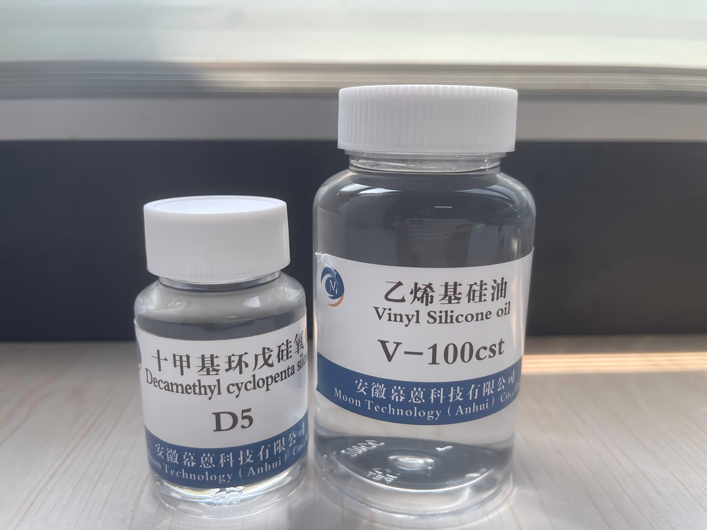
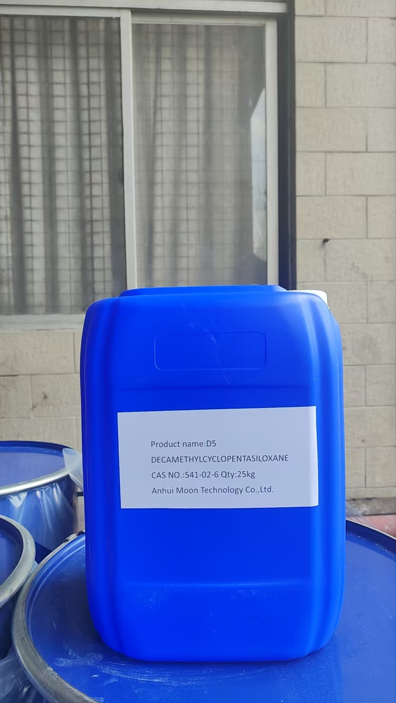
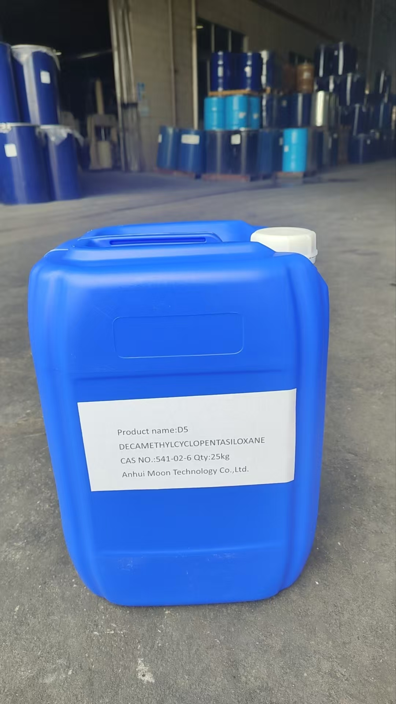

Decamethylcyclopentasiloxane
CAS: 541-02-6D5 Cyclopentasiloxane is a volatile cyclic siloxane (cyclo-dimethicone) widely used in cosmetics, personal care formulations, and industrial defoaming applications. It provides excellent spreadability, non-greasy feel, and rapid evaporation. As a key raw material for silicone rubber production and high-performance release agents, D5 is registered with REACH and complies with FDA standards for cosmetic use.
| Chemical Name | D5 Cyclopentasiloxane |
|---|---|
| CAS Number | 541-02-6 |
| Molecular Formula | C₁₀H₃₀O₅Si₅ |
| Molecular Weight | 384.82 g/mol |
| Appearance | Colorless transparent liquid |
| Purity | ≥99.5% |
| Density (25°C) | 0.950-0.960 g/cm³ |
| Refractive Index (25°C) | 1.393-1.397 |
| Boiling Point | 210°C |
| Flash Point | 77°C |
| Viscosity (25°C) | ~4 mm²/s |
| Packing | 200kg drums, IBC 1000kg, or as requested |
Skin care, deodorant, hair care formulations. Provides silky smooth feel and non-greasy spreading properties.
Key raw material and platinumm catalyst solvent in RTV-2 silicone rubber manufacturing processes.
Antifoaming agent for coatings, inks, adhesives, and industrial process fluids.
High-performance release agent for molds in rubber, plastic, and composite manufacturing.
Fiber lubricant and finishing agent for textiles and leather treatment.
Heat-resistant dielectric fluid and solvent for electronic component manufacturing.